Отчёт о соответствии выполненных работ техническому заданию
Период работ: 8–28 апреля 2026Подрядчик: Aleksandr UspeshnyyПродакшен:otragenie-camp.ru/v3
Краткое резюме
Сайт развёрнут на собственном домене и работающем сервере, лендинг реализован по структуре технического задания
(14 экранов), телеграм-бот настроен и интегрирован с командной форум-группой,
подключён приём платежей через Prodamus с опцией «Частями» (BNPL), а также сверх ТЗ реализованы
дополнительные модули: голосовой AI-ассистент, виджет живого менеджера (LiveChat),
три итерации правок (15, 19 и 28 апреля).
Финансовые условия
Параметр
Сумма, ₽
Согласованная стоимость работ по КП от 8 апреля
40 000
Аванс по КП (50%)
20 000
Фактически получено: 10 000 от Р. Дусенко + 10 000 от М. Дзодзатти (9 апреля)
20 000
К доплате после сдачи работ
20 000
✓ Реализовано по ТЗ★ Сверх ТЗ — без доплаты⏳ Уточнено по ходу работы
Соответствие по экранам
Экран 01
Hero — главный первый экран
✓ Реализовано
Требование ТЗ: название проекта, даты и локация, ключевая идея, кнопка бронирования,
видеофон под темой выезда. Дополнительно реализовано: ротация 5 видеороликов на десктопе
и 4 на мобильном с весами показа (промо-ролик в 50% случаев), адаптация под мобильный.
Источники по этому пункту
[15.04 · после 12:00]Мария Зубрицкая: «Даты не верно. Описание не как в тз» — приведено к ТЗ.
[15.04]Майя Дзодзатти: «Слово терапевтическая НЕ МОЖЕТ ТАМ БЫТЬ. Мы по закону не имеем права использовать это слово…» — слово удалено везде, где встречалось.
[15.04]Мария Зубрицкая: «Даем обратную связь по тз» — тексты hero приведены в формулировки ТЗ.
Десктоп · 1440 px
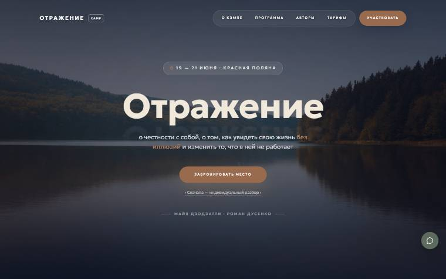
Мобильный · iPhone 13
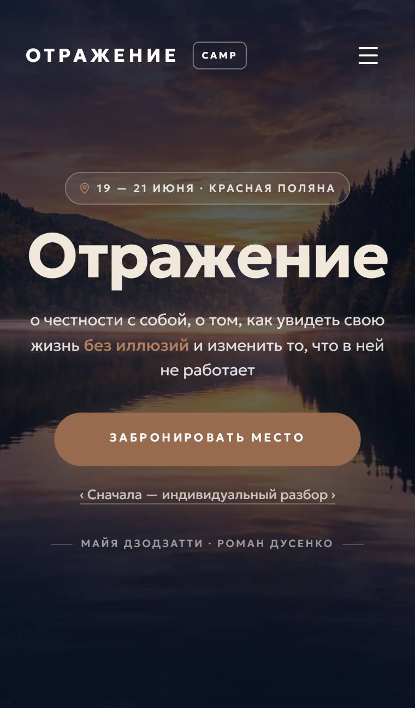
Экран 03
«О проекте» — когда нужен такой выезд
✓ Реализовано
Требование ТЗ: вводный блок с описанием момента, когда человек узнаёт себя в формулировках кэмпа;
карточки болей участников; цитата ведущей. Видео локации в качестве правой колонки. Тексты
приведены к формулировкам из ТЗ во второй итерации (19 апреля), затем обновлены в третьей (28 апреля).
Источники по этому пункту
[15.04]Мария Зубрицкая: «Далее сразу после этого был экран 3 — Когда вы понимаете что нужен Кэмп» — секция воспроизведена.
[15.04]Мария Зубрицкая: «Это не цитата, а ключевое заключение мысли после пунктов как вы это ощущаете» — блок переработан.
[15.04]Мария Зубрицкая: «Здесь снова не весь текст из тз, и размещение текста мне не очень нравится…» — добавлен пропущенный фрагмент про «менять работу, партнёров, города…».
Десктоп · 1440 px
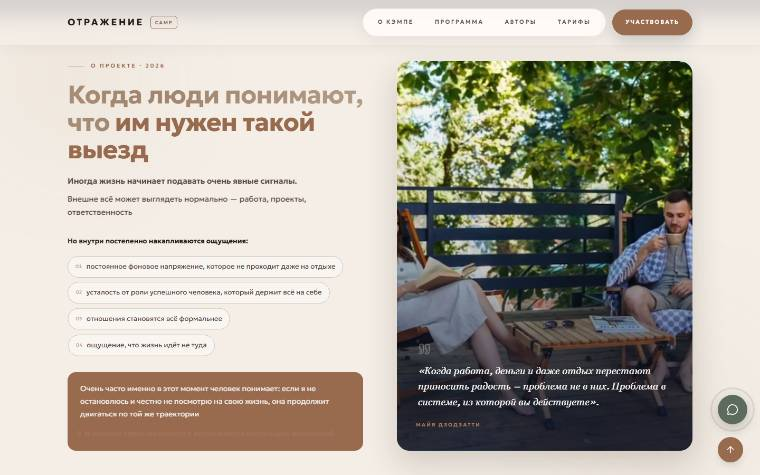
Мобильный · iPhone 13
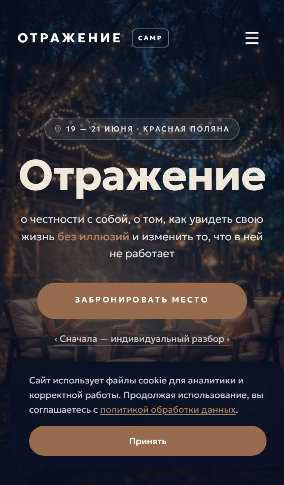
Экран 04
«Система, из которой вы действуете» — Майя
✓ Реализовано
Требование ТЗ: цитата Майи о том, что проблема не в работе/деньгах/отношениях,
а в системе принятия решений. Фоновое фото Майи, тёплая аура (SoftAurora WebGL).
Источники по этому пункту
[15.04]Мария Зубрицкая: «Здесь выделить надо: я бы выделила не в отношениях, не в работе, не в усталости. И выделила проблема в системе из которой ты живешь» — верстка изменена под акценты по ТЗ.
[15.04]Мария Зубрицкая: «Очень много шрифтов и при этом несоблюдение правил…» — шрифтовая иерархия унифицирована.
Десктоп · 1440 px
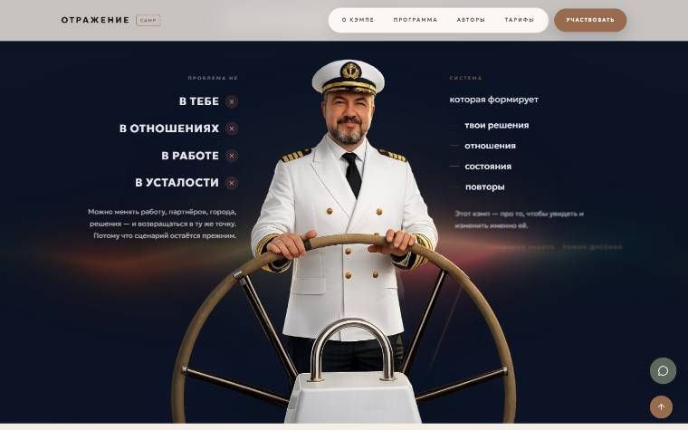
Мобильный · iPhone 13
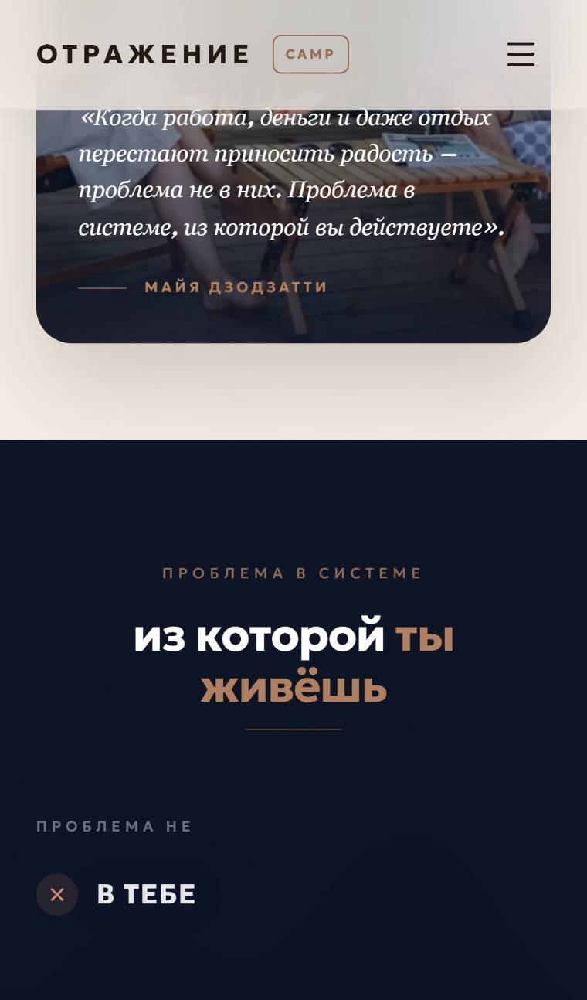
Экран 05
«Что происходит на кэмпе»
✓ Реализовано
Требование ТЗ: описание формата работы, концентрированный двухдневный процесс,
«работа, в которой за два дня становится видно то, что в обычной жизни остаётся незамеченным годами».
Видео girlsswim.MP4 (зацикленное) вместо изначального стокового изображения по правке от 15.04.
Источники по этому пункту
[15.04]Мария Зубрицкая: «Картинка не соответствует смыслам, это не про глубокую работу в терапии» — фон заменён на тематическое видео.
[15.04]Майя Дзодзатти: «Может взять фото, которые быть в презе» — в третьей итерации использованы согласованные материалы.
[15.04]Мария Зубрицкая: «ЧТО ПРОИСХОДИТ НА КЭМПЕ — Это пространство, где ты больше не можешь не видеть правду…» — текст приведён к формулировке ТЗ.
Десктоп · 1440 px
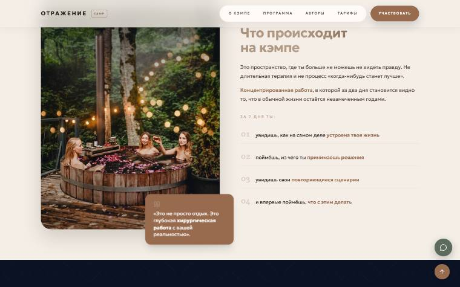
Мобильный · iPhone 13
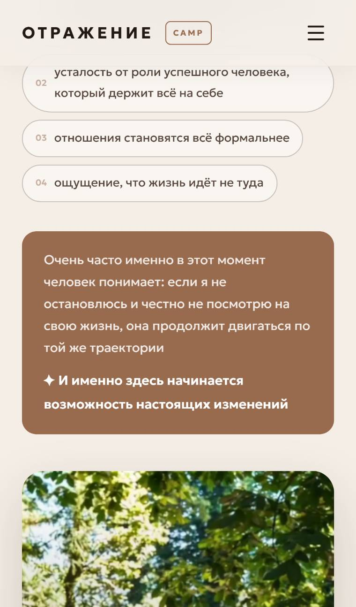
Экран 06
Авторы — Майя Дзодзатти и Роман Дусенко
✓ Реализовано⏳ Цифры экспертов ожидаются от заказчика
Требование ТЗ: блок с экспертами кэмпа, их регалии и краткое описание подхода.
Используются согласованные фотографии. Адаптировано под мобильный.
Источники по этому пункту
[15.04]Мария Зубрицкая: «Фото участников как в презе должны быть» — фото заменены на согласованные.
[15.04]Мария Зубрицкая: «В тз у каждого эксперта указаны цифры которые важно указать, а так же личный опыт в отношениях» — ожидаются точные цифры от Майи и команды; место под них зарезервировано.
Десктоп · 1440 px
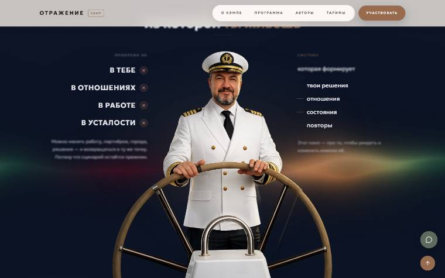
Мобильный · iPhone 13
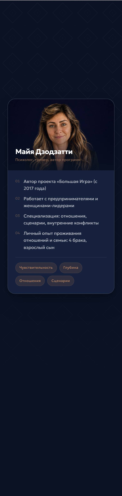
Экран 08
Программа трёх дней
✓ Реализовано
Требование ТЗ: детальная программа выезда по дням и блокам — с диагностикой,
глубинной работой и интеграцией. Тексты — в формулировках ТЗ.
Источники по этому пункту
[15.04]Мария Зубрицкая: «Здесь было: ИНСТРУМЕНТЫ ОТРАЖЕНИЯ. И точный текст как должно быть написано» — текст приведён к ТЗ.
[15.04]Мария Зубрицкая: «Работа проходит в малой группе, всего 10 человек…» — формулировка использована дословно.
Требование ТЗ: описание локации в формулировках ТЗ, галерея фотографий,
указание формата размещения. Загружены актуальные фотографии глэмпинга.
Источники по этому пункту
[08.04]Мария Зубрицкая: «Я там ошиблась в тз, не глемпинг лес а Дзен рекавери, поправила в тз тоже» — название локации актуализировано.
[15.04]Мария Зубрицкая: «Красная Поляна · Глэмпинг „Дзен рекавери“… (фото локации)» — текст и фото обновлены под формулировку ТЗ.
[15.04]Мария Зубрицкая: «Здесь название глемпинга не то…» — заменено повсюду.
[15.04]Майя Дзодзатти: «Там нет питания вообще» — упоминание трёхразового питания удалено из FAQ и тарифов.
Десктоп · 1440 px
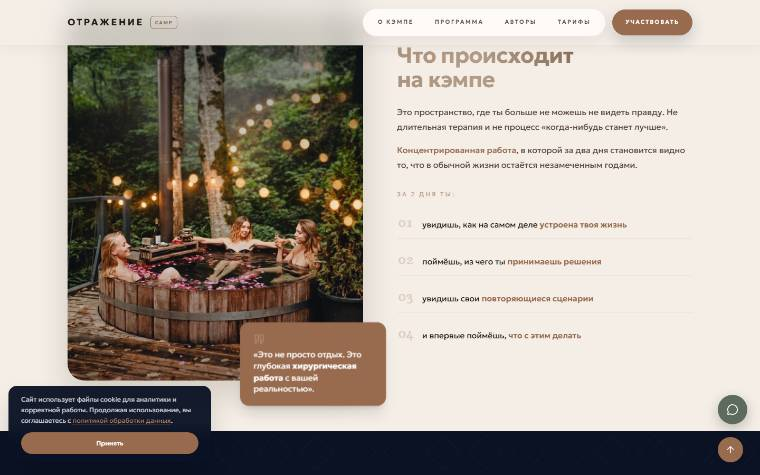
Мобильный · iPhone 13
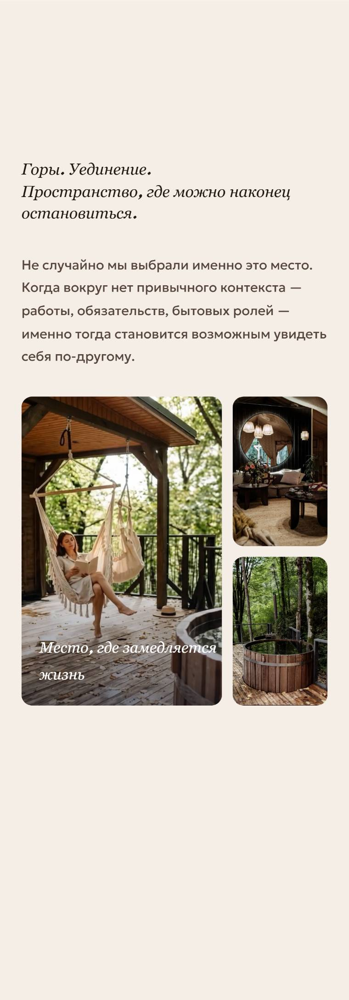
Экран 10
Кейсы клиентов
✓ Реализовано★ + переверстка под формат «колоды»
Требование ТЗ: блок с кейсами «до / после», навигация между карточками. По доп. правке от 15 апреля
реализована подсветка соседних карточек по бокам активной (формат «колоды»),
свайп на мобильном, кнопки «вперёд / назад». Переверстка выполнена сверх объёма КП.
Источники по этому пункту
[15.04]Мария Зубрицкая: «Здесь не видно и не заметно что есть еще кейсы. Сделать так, чтобы справа было видно кусочек следующей карточки. И под стрелочками приписку „Смотреть кейсы →“» — карусель переверстана в формат «колоды» с предпросмотром соседних карточек, сверх объёма КП.
Десктоп · 1440 px
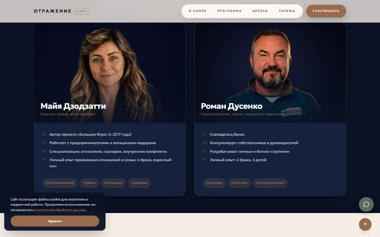
Мобильный · iPhone 13
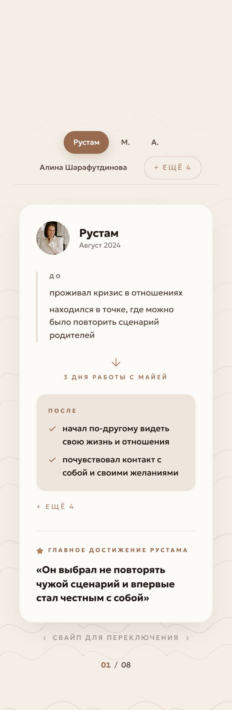
Экран 11
Для кого этот выезд
✓ Реализовано
Требование ТЗ: описание целевой аудитории, для кого создан кэмп.
Тексты — в формулировках ТЗ.
Источники по этому пункту
[15.04]Мария Зубрицкая: «Пропущена вводная часть: „Иногда в жизни наступает момент…“» — добавлено.
[15.04]Мария Зубрицкая: «Формулировки и текст нужно все использовать как в тз» — тексты приведены дословно.
Десктоп · 1440 px
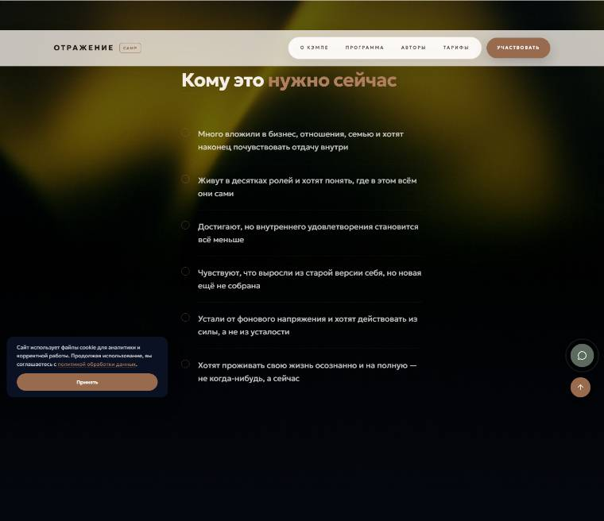
Мобильный · iPhone 13
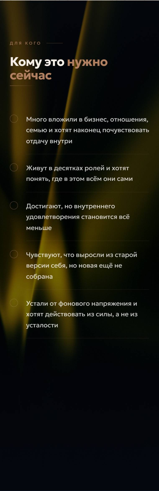
Экран 12
Что вы получите по итогу
✓ Реализовано
Требование ТЗ: блок ожидаемых результатов участия. Динамический фоновый слой,
общая визуальная стилистика выезда. Реализован якорь «Что ты получишь» с правильным переходом
на эту секцию (исправлено по обратной связи).
Источники по этому пункту
[—]Замечание заказчика: «Эта ссылка ведёт вверх страницы, а должна на секцию ниже» — якорь исправлен на корректный переход к секции «Что вы получите».
Десктоп · 1440 px
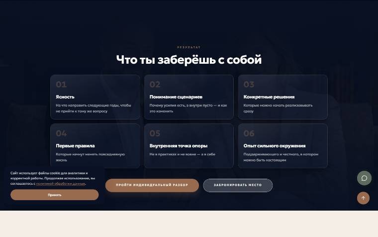
Мобильный · iPhone 13
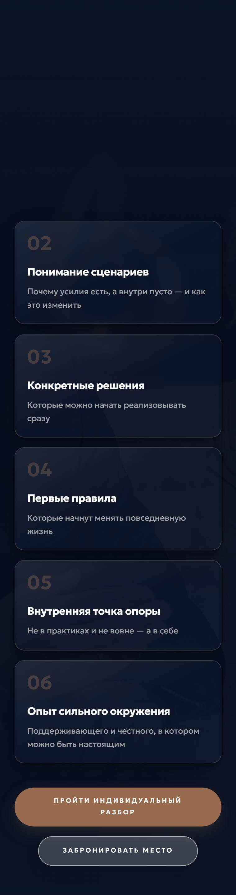
Экран 13
Тарифы и оплата
✓ Реализовано★ + интеграция «Частями» (BNPL)
Требование ТЗ: 3 варианта тарифа, кнопки оплаты с переходом на платёжную страницу.
Сверх ТЗ: подключена опция «Оплата частями» (Prodamus BNPL, 1.5/3/6/10/12 мес.),
дополнительный пункт оферты внесён, платёжная страница работает в продакшене.
Источники по этому пункту
[15.04]Мария Зубрицкая: «По кнопкам оплатить, мы утверждали такие варианты: 20 тыс забронировать место, Полная оплата, Рассрочка и кредит» — все три варианта реализованы.
[15.04]Майя Дзодзатти: «Должны быть варианты с рассрочкой… на сумму процентов» — подключена интеграция «Оплата частями» от Prodamus с тарифной сеткой 1.5–12 мес.
[27.04]Aleksandr Uspeshnyy: прислал условия Prodamus «Частями» с комиссиями и сроками; Роман Дусенко подтвердил подключение.
[28.04]Aleksandr Uspeshnyy: «Оплата частями подключена» — тариф настроен и работает в продакшене.
Десктоп · 1440 px
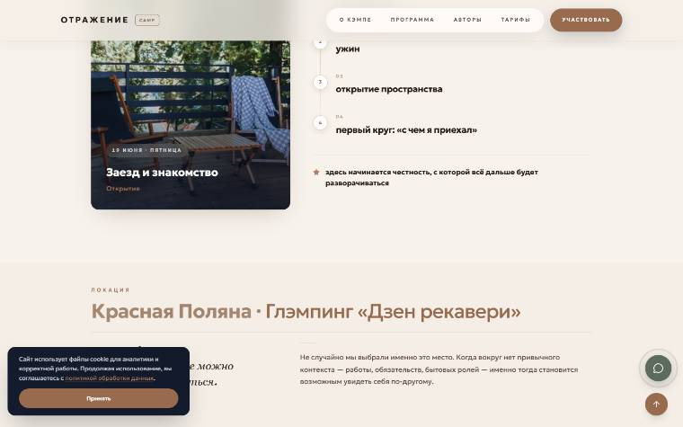
Мобильный · iPhone 13
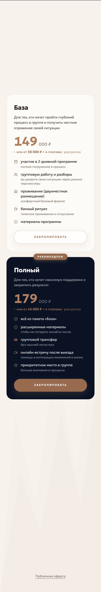
Экран 14
Финал — две развилки и итог
✓ Реализовано★ + ротация фонов
Требование ТЗ: финальный экран с двумя сценариями («без выезда» и «с выездом»)
и общим выводом. Сверх ТЗ: фоновое изображение автоматически меняется
между тремя кадрами каждые 8 секунд с плавным crossfade и Ken-Burns scale.
Источники по этому пункту
[15.04]Мария Зубрицкая: «Вот после тарифов мы утверждали вариант с красной и зеленой капсулой» — реализованы две капсулы «Сценарий 01» и «Сценарий 02».
[—]Замечание заказчика: «Сделай чтобы фоновое изображение в секции „Сценарий 01 · без выезда“ плавно менялось каждые 8 секунд» — приложены 3 фото — фоны добавлены, ротация настроена.
Десктоп · 1440 px
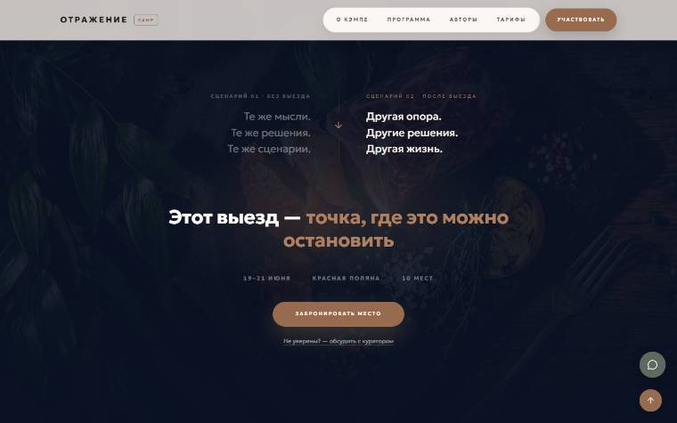
Мобильный · iPhone 13
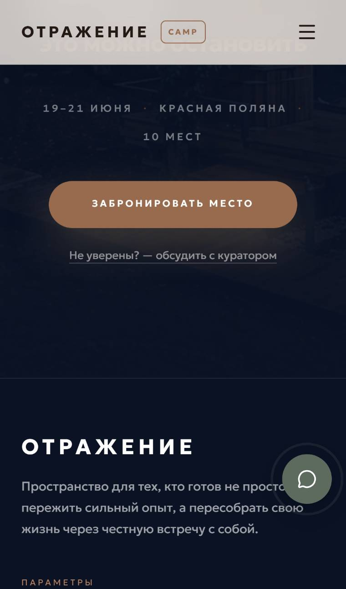
Дополнительная инфраструктура
Backend / Bot
Telegram-бот воронки лидогенерации
★ Сверх ТЗ
Воронка /start → согласие с офертой → имя → роль → боль → forum-topic в группе → аудио-практика → follow-up через 24 часа.
Сообщения пользователя в личке копируются в его forum-topic в Telegram-группе команды,
ответы из топика возвращаются пользователю.
Реализован gate с пользовательским соглашением (первый шаг — «Согласен»).
Админ-команды: /setaudio, /cancelaudio, /audioinfo, /audiotest,
/analytics (Яндекс.Метрика), /prices, /dates, /docs.
Источники по этому пункту
[08.04]Роман Дусенко: «Саша, подключи нам в подарок 🎁 классный чат бот, на запись на диагностику» — реализована полная воронка лидогенерации, выходящая за объём изначального КП.
[—]Замечание заказчика: «Первое сообщение пользователю — просьба согласиться с пользовательским соглашением. Просим написать „Согласен“, после этого только чат» — gate с консентом реализован, далее воронка работает только после согласия.
Frontend / Widget
LiveChat — живой менеджер из Telegram
★ Сверх ТЗ
Зелёный FAB-виджет в правом нижнем углу. Сообщения посетителя сайта попадают в отдельный
forum-topic в Telegram-группе. Менеджер отвечает прямо из Telegram — ответ возвращается посетителю
в виджет с поллингом каждые 3 секунды. На мобильном виджет показывается только после секции «Авторы»,
чтобы не перекрывать CTA Hero.
Источники по этому пункту
[15.04]Мария Зубрицкая: «Давайте вместо аи бота поставим ссылку на Леру? или допом, чтобы они смогли связаться с живым человеком?» — реализован виджет живого чата с пересылкой в Telegram.
[—]Замечание заказчика: «На мобильном виджет чата показывать только после секции Авторы» — добавлено условие появления.
Frontend / AI
Голосовой AI-ассистент на Gemini
★ Сверх ТЗ
Микрофон-FAB, Web Speech API, TTS, function calling для генерации платёжных ссылок.
Системный промпт содержит весь контент сайта, чтобы ассистент отвечал в фактах кэмпа.
Источники по этому пункту
[08.04]Роман Дусенко: «Подключи чат-бот на запись на диагностику» — реализован голосовой ассистент с function calling под платежи.
Backend / Payments
Prodamus — приём платежей и BNPL
✓ Реализовано
Эндпоинт /api/prodamus/pay формирует платёжную ссылку, сверка через
HMAC-SHA256 на webhook /api/prodamus/webhook. Подключена опция «Частями».
Уведомления об оплатах поступают в общую группу.
Источники по этому пункту
[15.04]Майя Дзодзатти: «Оферта нужна. В ней прописываются варианты оплаты, далее бухгалтер смотрит как правильно все это обозвать в назначении платежа, а потом инфа дублируюется на сайт» — оферта подключена, ссылка ведёт на /oferta.
[27–28.04]Aleksandr Uspeshnyy: «Оплата частями подключена» — BNPL работает.
DevOps
Домен, сервер, развёртывание
✓ Реализовано
Регистрация домена otragenie-camp.ru, настройка сервера (PM2, nginx, HTTPS),
автоматический деплой через git pull + npm run build,
SQLite для бота с персистентным хранением. Логирование событий, мониторинг через PM2.
Источники по этому пункту
[07.04]Aleksandr Uspeshnyy: предложил пул из 30+ вариантов доменов; согласован otragenie-camp.ru.
[08.04 · 11:10]Beget: «Поздравляем, домен otragenie-camp.ru успешно зарегистрирован».
Aleksandr Uspeshnyy → 30+ вариантов; ответ Марии Зубрицкой: «Первый» (otragenie-camp.ru)
08.04
Отправлено КП. Запрошен аванс 20 000 ₽.
Aleksandr Uspeshnyy: «Жду 20т.р. на сбер по номеру»
09.04
Получено 20 000 ₽ (10 000 от Р. Дусенко + 10 000 от М. Дзодзатти). Работа начата.
Aleksandr Uspeshnyy: «Коллеги, получил только половину аванса ☝️» → Майя: «Я отправлю завтра»
11.04
М. Зубрицкая обновила ТЗ — изменены даты выезда.
Мария Зубрицкая: «У нас поменялись даты выезда, в тз поправила»
14.04
Выпущена первая версия + документация по адресу /doc.
Aleksandr Uspeshnyy: «otragenie-camp.ru/v1, документация /doc, пароль otragenie888camp»
15.04
Пакет правок от М. Зубрицкой; юр. замечание М. Дзодзатти про слово «терапевтическая»; обсуждение оферты и BNPL.
Серия из 30+ сообщений Марии Зубрицкой по экранам; Майя Дзодзатти: «слово нельзя использовать нигде»
18.04
Уточнено: «все ли правки описаны?» — ответ «да». Правки внесены.
Aleksandr Uspeshnyy: «Все правки по странице описаны на данный момент?» → Мария Зубрицкая: «Добрый день, да»
19.04
Выпущено обновление, отправлен Notion-отчёт по правкам.
Aleksandr Uspeshnyy: «Готово, проверьте» + ссылка на Notion
20.04
Серия дополнительных правок (часть выходит за объём КП: дизайн-система, шрифты, цветовая палитра, переверстка кейсов).
Запиненные сообщения Марии Зубрицкой: «по оформлению дизайна тоже у меня вопросики», «Очень много шрифтов», «не реализованы в полном объеме еще предыдущие»